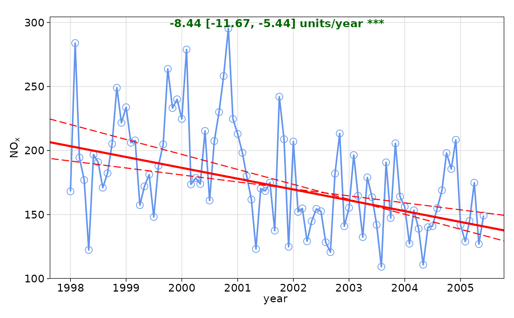

Theil-Sen slope estimates and tests for trend. The TheilSen function is
flexible in the sense that it can be applied to data in many ways e.g. by day
of the week, hour of day and wind direction. This flexibility makes it much
easier to draw inferences from data e.g. why is there a strong downward trend
in concentration from one wind sector and not another, or why trends on one
day of the week or a certain time of day are unexpected.
Usage
TheilSen(
mydata,
pollutant = "nox",
deseason = FALSE,
type = "default",
avg.time = "month",
statistic = "mean",
percentile = NA,
data.thresh = 0,
alpha = 0.05,
dec.place = 2,
lab.frac = 0.99,
lab.cex = 0.8,
ref.x = NULL,
ref.y = NULL,
data.col = "cornflowerblue",
trend = list(lty = c(1, 5), lwd = c(2, 1), col = c("red", "red")),
text.col = "darkgreen",
slope.text = NULL,
cols = NULL,
auto.text = TRUE,
autocor = FALSE,
slope.percent = FALSE,
date.breaks = 7,
date.format = NULL,
plot = TRUE,
silent = FALSE,
...
)Arguments
- mydata
A data frame containing the field
dateand at least one other parameter for which a trend test is required; typically (but not necessarily) a pollutant.- pollutant
The parameter for which a trend test is required. Mandatory.
- deseason
Should the data be de-deasonalized first? If
TRUEthe functionstlis used (seasonal trend decomposition using loess). Note that ifTRUEmissing data are first imputed using a linear regression by month becausestlcannot handle missing data. In this case the plot shows where the missing data have been imputed as a grey filled circle.- type
Character string(s) defining how data should be split/conditioned before plotting.
"default"produces a single panel using the entire dataset. Any other options will split the plot into different panels - a roughly square grid of panels if onetypeis given, or a 2D matrix of panels if twotypesare given.typeis always passed tocutData(), and can therefore be any of:A built-in type defined in
cutData()(e.g.,"season","year","weekday", etc.). For example,type = "season"will split the plot into four panels, one for each season.The name of a numeric column in
mydata, which will be split inton.levelsquantiles (defaulting to 4).The name of a character or factor column in
mydata, which will be used as-is. Commonly this could be a variable like"site"to ensure data from different monitoring sites are handled and presented separately. It could equally be any arbitrary column created by the user (e.g., whether a nearby possible pollutant source is active or not).
Most
openairplotting functions can take twotypearguments. If two are given, the first is used for the columns and the second for the rows.- avg.time
Can be “month” (the default), “season” or “year”. Determines the time over which data should be averaged. Note that for “year”, six or more years are required. For “season” the data are split up into spring: March, April, May etc. Note that December is considered as belonging to winter of the following year.
- statistic
Statistic used for calculating monthly values. Default is “mean”, but can also be “percentile”. See
timeAverage()for more details.- percentile
Single percentile value to use if
statistic = "percentile"is chosen.- data.thresh
The data capture threshold to use (%) when aggregating the data using
avg.time. A value of zero means that all available data will be used in a particular period regardless if of the number of values available. Conversely, a value of 100 will mean that all data will need to be present for the average to be calculated, else it is recorded asNA.- alpha
For the confidence interval calculations of the slope. The default is 0.05. To show 99\ trend, choose alpha = 0.01 etc.
- dec.place
The number of decimal places to display the trend estimate at. The default is 2.
- lab.frac
Fraction along the y-axis that the trend information should be printed at, default 0.99.
- lab.cex
Size of text for trend information.
- ref.x
Either a single value or values representing the x axis intercepts to draw lines, or a list such as that provided by
refOpts()to customise the colour/width/type/etc. of each line. SeerefOpts()for more details.- ref.y
Either a single value or values representing the y axis intercepts to draw lines, or a list such as that provided by
refOpts()to customise the colour/width/type/etc. of each line. SeerefOpts()for more details.- data.col
Colour name for the data
- trend
list containing information on the line width, line type and line colour for the main trend line and confidence intervals respectively.
- text.col
Colour name for the slope/uncertainty numeric estimates
- slope.text
The text shown for the slope (default is ‘units/year’).
- cols
Predefined colour scheme, currently only enabled for
"greyscale".- auto.text
Either
TRUE(default) orFALSE. IfTRUEtitles and axis labels will automatically try and format pollutant names and units properly, e.g., by subscripting the "2" in "NO2". Passed toquickText().- autocor
Should autocorrelation be considered in the trend uncertainty estimates? The default is
FALSE. Generally, accounting for autocorrelation increases the uncertainty of the trend estimate — sometimes by a large amount.- slope.percent
Should the slope and the slope uncertainties be expressed as a percentage change per year? The default is
FALSEand the slope is expressed as an average units/year change e.g. ppb. Percentage changes can often be confusing and should be clearly defined. Here the percentage change is expressed as 100 * (C.end/C.start - 1) / (end.year - start.year). Where C.start is the concentration at the start date and C.end is the concentration at the end date.For
avg.time = "year"(end.year - start.year) will be the total number of years - 1. For example, given a concentration in year 1 of 100 units and a percentage reduction of 5%/yr, after 5 years there will be 75 units but the actual time span will be 6 years i.e. year 1 is used as a reference year. Things are slightly different for monthly values e.g.avg.time = "month", which will use the total number of months as a basis of the time span and is therefore able to deal with partial years. There can be slight differences in the %/yr trend estimate therefore, depending on whether monthly or annual values are considered.- date.breaks
Number of major x-axis intervals to use. The function will try and choose a sensible number of dates/times as well as formatting the date/time appropriately to the range being considered. The user can override this behaviour by adjusting the value of
date.breaksup or down.- date.format
This option controls the date format on the x-axis. A sensible format is chosen by default, but the user can set
date.formatto override this. For format types seestrptime(). For example, to format the date like "Jan-2012" setdate.format = "\%b-\%Y".- plot
When
openairplots are created they are automatically printed to the active graphics device.plot = FALSEdeactivates this behaviour. This may be useful when the plot data is of more interest, or the plot is required to appear later (e.g., later in a Quarto document, or to be saved to a file).- silent
When
FALSEthe function will give updates on trend-fitting progress.- ...
Addition options are passed on to
cutData()fortypehandling. Some additional arguments are also available, varying somewhat in different plotting functions:title,subtitle,caption,tag,xlabandylabcontrol the plot title, subtitle, caption, tag, x-axis label and y-axis label, passed toggplot2::labs()viaquickText()ifauto.text = TRUE.xlim,ylimandlimitscontrol the limits of the x-axis, y-axis and colorbar scales.ncolandnrowset the number of columns and rows in a faceted plot.scalescan be"fixed","free_x","free_y"or"free"to control whether axes are shared across facets when usingtype. Also supported are the legacyx.relationandy.relation, which can be either"same"or"free"and get remapped toscalesautomatically.Similarly,
space,axes,axis.labels,switchandstrip.positioncan be used to customise the appearance of faceted plots. Seeggplot2::facet_wrap()andggplot2::facet_grid()for the arguments these take.fontsizeoverrides the overall font size of the plot by setting thetextargument ofggplot2::theme(). It may also be applied proportionately to anyopenairannotations (e.g., N/E/S/W labels on polar coordinate plots).Various graphical parameters are also supported:
linewidth,linetype,shape,size,border, andalpha. Not all parameters apply to all plots. These can take a single value, or a vector of multiple values - e.g.,shape = c(1, 2)- which will be recycled to the length of values needed.lineend,linejoinandlinemitretweak the appearance of line plots; seeggplot2::geom_line()for more information.In polar coordinate plots,
annotate = FALSEwill remove the N/E/S/W labels and any other annotations.
Value
an openair object. The data component of the
TheilSen output includes two subsets: main.data, the monthly data
res2 the trend statistics. For output <- TheilSen(mydata, "nox"), these
can be extracted as object$data$main.data and object$data$res2,
respectively. Note: In the case of the intercept, it is assumed the y-axis
crosses the x-axis on 1/1/1970.
Details
For data that are strongly seasonal, perhaps from a background site, or a
pollutant such as ozone, it will be important to deseasonalise the data
(using the option deseason = TRUE.Similarly, for data that increase, then
decrease, or show sharp changes it may be better to use smoothTrend().
A minimum of 6 points are required for trend estimates to be made.
Note! that since version 0.5-11 openair uses Theil-Sen to derive the p values also for the slope. This is to ensure there is consistency between the calculated p value and other trend parameters i.e. slope estimates and uncertainties. The p value and all uncertainties are calculated through bootstrap simulations.
Note that the symbols shown next to each trend estimate relate to how statistically significant the trend estimate is: p $<$ 0.001 = ***, p $<$ 0.01 = **, p $<$ 0.05 = * and p $<$ 0.1 = $+$.
Some of the code used in TheilSen is based on that from Rand Wilcox. This
mostly relates to the Theil-Sen slope estimates and uncertainties. Further
modifications have been made to take account of correlated data based on
Kunsch (1989). The basic function has been adapted to take account of
auto-correlated data using block bootstrap simulations if autocor = TRUE
(Kunsch, 1989). We follow the suggestion of Kunsch (1989) of setting the
block length to n(1/3) where n is the length of the time series.
The slope estimate and confidence intervals in the slope are plotted and numerical information presented.
References
Helsel, D., Hirsch, R., 2002. Statistical methods in water resources. US Geological Survey. Note that this is a very good resource for statistics as applied to environmental data.
Hirsch, R. M., Slack, J. R., Smith, R. A., 1982. Techniques of trend analysis for monthly water-quality data. Water Resources Research 18 (1), 107-121.
Kunsch, H. R., 1989. The jackknife and the bootstrap for general stationary observations. Annals of Statistics 17 (3), 1217-1241.
Sen, P. K., 1968. Estimates of regression coefficient based on Kendall's tau. Journal of the American Statistical Association 63(324).
Theil, H., 1950. A rank invariant method of linear and polynomial regression analysis, i, ii, iii. Proceedings of the Koninklijke Nederlandse Akademie Wetenschappen, Series A - Mathematical Sciences 53, 386-392, 521-525, 1397-1412.
... see also several of the Air Quality Expert Group (AQEG) reports for the use of similar tests applied to UK/European air quality data.
See also
Other time series and trend functions:
calendarPlot(),
smoothTrend(),
timePlot(),
timeProp(),
timeVariation()
Examples
# trend plot for nox
TheilSen(mydata, pollutant = "nox")

# trend plot for ozone with p=0.01 i.e. uncertainty in slope shown at
# 99 % confidence interval
if (FALSE) { # \dontrun{
TheilSen(mydata, pollutant = "o3", ylab = "o3 (ppb)", alpha = 0.01)
} # }
# trend plot by each of 8 wind sectors
if (FALSE) { # \dontrun{
TheilSen(mydata, pollutant = "o3", type = "wd", ylab = "o3 (ppb)")
} # }
# and for a subset of data (from year 2000 onwards)
if (FALSE) { # \dontrun{
TheilSen(selectByDate(mydata, year = 2000:2005), pollutant = "o3", ylab = "o3 (ppb)")
} # }